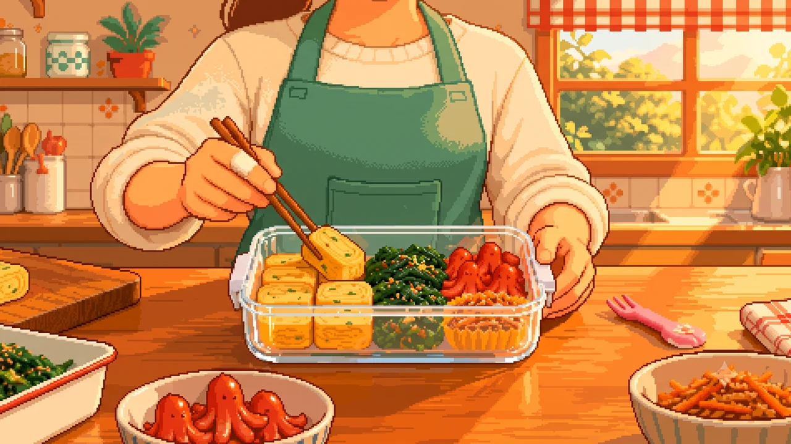

보고, 머무는이야기.
정재환AI 영상 포트폴리오 2026「반찬통의 왕복」 · 「틈GO」
FILM 01 반찬통의 왕복
A PERSONAL AI FILM ARCHIVE — 2026
장면에는온도가 있다.
Beyond the prompt.
Into the feeling.
생성형 AI와 사람의 연출이 만나는 지점.
서로 다른 두 이야기로 완성한 영상 작업의 기록입니다.
FILM 02 틈GO
FILM 01 / EMOTIONAL BRAND FILM
반찬통의 왕복.
1999 → 2007 → 2026
엄마가 채워 주던 반찬통을,
이번엔 아들이 채워서 돌려준다.


① MEMORY / THE RETURN
THREE ERAS · ONE GESTURE
05s / MOTION STUDY · STILLS
DIRECTOR'S NOTE
도트에서 3D로, 다시 실사로. 기술의 변화가 아니라 받는 사람에서 건네는 사람으로 변하는 마음을 담았습니다.
BEHIND THE FRAME


같은 구도로 맞춘 도트 프레임과 3D 프레임. After Effects에서 도트를 픽셀 단위로 흩었다가 같은 자리의 3D로 모으고, 화면을 4:3에서 16:9로 넓혔습니다.
STORY MOMENTS
INTERMISSION / A MOMENT TO FEEL
Some stories are felt
before they are understood.
FILM 02 / FUTURE SERVICE COMMERCIAL
틈GO®
A SMALL GAP IN THE DAY
문 앞에 두세요.
나머지는 틈GO가.


② TUMGO / SERVICE FICTION
THE FUTURE AT YOUR DOOR
05s / MOTION STUDY · STILLS
[ 02 — HOW IT'S MADE ]
AI가 만들고,
사람이 연출합니다.
01CONCEPT
아이디어와 페르소나, 스토리보드
02GENERATE
캐릭터·공간·장면 생성과 동작 테스트
03REFINE
일관성 검수, VFX, 색보정 및 사운드
04SCREEN
최종 영상과 컷별 제작 기록 연결
[ 03 — THE PERSON BEHIND THE SCENES ]
기술보다 오래 남는 건
한 장면의 감정.
기획부터 생성, 편집과 검수까지 혼자 끝까지 가져갑니다. 생성형 AI는 장면을 빨리 만드는 도구로, After Effects와 편집은 그 장면에 감정을 입히는 손으로 씁니다.
CONTACT
dkfksem2@gmail.com
- 이름
- 정재환AI 영상 기획 · 연출 · 모션그래픽
- 교육
- [AI Worker] K-콘텐츠 생성형 AI 영상편집 모션그래픽 숏폼 크리에이티브 전문가 과정2026
- 할 수 있는 일
- 작품
- 반찬통의 왕복락앤락 비공식 브랜드 필름, 1분 23초, 2026틈GO가상 생활 서비스 광고, 약 1분, 2026
- 경력 · 자격
- 이력서 내용을 여기에 적어 주세요